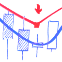

<!DOCTYPE html>
<html lang="en">
<head>
  <meta charset="UTF-8">
  <title>QuanTAlib Docs - Dark Theme</title>
  <meta http-equiv="X-UA-Compatible" content="IE=edge,chrome=1" />
  <meta name="description" content="Quantitative Technical Analysis Library in C#">
  <meta name="viewport" content="width=device-width, initial-scale=1.0, minimum-scale=1.0">
  <link rel="icon" type="image/png" href="docs/img/QuanTAlib2.png">
  <link rel="stylesheet" href="https://cdn.jsdelivr.net/npm/docsify@4/themes/dark.css">
  <style>
    @font-face {
      font-family: 'IBM Plex Sans';
      font-weight: 400;
      src: url(https://cdn.jsdelivr.net/fontsource/fonts/ibm-plex-sans@latest/latin-400-normal.woff2) format('woff2');
    }
    @font-face {
      font-family: 'IBM Plex Sans';
      font-weight: 600;
      src: url(https://cdn.jsdelivr.net/fontsource/fonts/ibm-plex-sans@latest/latin-600-normal.woff2) format('woff2');
    }
    body {
      font-family: "IBM Plex Sans", -apple-system, BlinkMacSystemFont, "Segoe UI", "Noto Sans", Helvetica, Arial, sans-serif;
      background-color: #0d1117 !important;
      color: #c9d1d9 !important;
    }

    .app-name-link {
      color: #c9d1d9 !important;
      font-weight: 600;
      font-size: 1.5em;
    }

    .sidebar {
      background-color: #010409 !important;
      border-right: 1px solid #30363d !important;
    }

    .sidebar-nav {
      color: #c9d1d9 !important;
    }

    .sidebar-nav li {
      margin: 0;
    }
    
    .sidebar-nav ul {
      padding-left: 0;
    }

    .sidebar-nav li {
      font-weight: 400;
      font-size: 14px !important;
    }

    .sidebar-nav li.sidebar-l1 > a,
    .sidebar-nav li.sidebar-l1 > p > a,
    .sidebar-nav li.sidebar-l1 > p {
      font-weight: 600 !important;
      font-size: 20px !important;
      color: #c9d1d9 !important;
    }

    .sidebar-nav li.sidebar-l1 {
      margin-top: 0.5em;
      margin-bottom: 0.1em;
    }

    .sidebar-nav li.sidebar-l1 li,
    .sidebar-nav li.sidebar-l1 li a {
      font-weight: 400 !important;
      font-size: 14px !important;
    }

    .sidebar-nav a {
      color: #58a6ff !important;
      text-decoration: none;
    }

    .sidebar-nav a:hover {
      text-decoration: underline;
    }

    .content {
      background-color: #0d1117 !important;
    }

    .markdown-section {
      max-width: none;
      margin: 0;
      padding: 8px 16px;
      color: #c9d1d9 !important;
    }

    .markdown-section h1 {
      color: #c9d1d9 !important;
      font-weight: 600;
      border-bottom: 1px solid #21262d;
      padding-bottom: 0.3em;
    }

    .markdown-section h2, 
    .markdown-section h3,
    .markdown-section h4,
    .markdown-section h5,
    .markdown-section h6 {
      color: #c9d1d9 !important;
      font-weight: 400;
    }

    .markdown-section h2 {
      border-bottom: 1px solid #21262d;
      padding-bottom: 0.3em;
    }

    .markdown-section p,
    .markdown-section ul,
    .markdown-section ol,
    .markdown-section li {
      color: #c9d1d9 !important;
    }

    .markdown-section strong {
      color: #e8d888 !important;
      font-weight: 700;
    }

    .markdown-section code {
      color: #ffffff !important;
      background-color: rgba(110,118,129,0.4) !important;
      border-radius: 6px;
      font-family: ui-monospace, SFMono-Regular, SF Mono, Menlo, Consolas, Liberation Mono, monospace;
      font-size: 85%;
      padding: 0.2em 0.4em;
    }

    .markdown-section pre {
      background-color: #161b22 !important;
      border-radius: 6px;
      border: 1px solid #30363d;
    }

    .markdown-section pre > code {
      color: #c9d1d9 !important;
      background-color: transparent !important;
      padding: 0;
      font-size: 85%;
    }

    .markdown-section a {
      color: #4493f8 !important;
      text-decoration: none;
    }

    .markdown-section a:hover {
      text-decoration: underline;
    }

    .markdown-section table {
      display: block;
      width: 100%;
      overflow: auto;
      border-spacing: 0;
      border-collapse: collapse;
    }

    .markdown-section table tr {
      background-color: #0d1117 !important;
      border-top: 1px solid #30363d;
    }

    .markdown-section table tr:nth-child(2n) {
      background-color: #161b22 !important;
    }

    .markdown-section table th, 
    .markdown-section table td {
      padding: 6px 13px;
      border: 1px solid #30363d;
      color: #c9d1d9 !important;
    }

    .markdown-section table th {
      font-weight: 600;
      background-color: #161b22 !important;
    }

    .markdown-section blockquote {
      color: #8b949e !important;
      border-left: 0.25em solid #30363d;
      background-color: rgba(110,118,129,0.1) !important;
    }

    .markdown-section img {
      background-color: transparent !important;
    }

    /* Pine Script syntax highlighting — GitHub dark palette */
    .token.doctype,
    .token.annotation { color: #8b949e; font-style: italic; }
    .token.type-definition { color: #79c0ff; }
    .token.class-name { color: #d2a8ff; }
    .token.constant { color: #ffa657; }
    .token.property { color: #c9d1d9; }
    .token.function { color: #d2a8ff; }
    .token.boolean { color: #ff7b72; }
  </style>
</head>
<body>
  <div id="app"></div>
  <script>
    globalThis.$docsify = {
      name: 'QuanTAlib',
      repo: 'https://github.com/mihakralj/QuanTAlib',
      loadSidebar: true,
      subMaxLevel: 0,
      auto2top: true,
      homepage: 'README.md',
      relativePath: true,
      alias: {
        '/.*/_sidebar.md': '/_sidebar.md',
      },
      plugins: [
        function(hook) {
          hook.doneEach(function() {
            setTimeout(function() {
              var nav = document.querySelector('.sidebar-nav');
              if (!nav) return;
              var topUl = nav.querySelector('ul');
              if (!topUl) return;
              Array.from(topUl.children).forEach(function(li) {
                if (li.tagName === 'LI') {
                  li.classList.add('sidebar-l1');
                }
              });
            }, 100);
          });
        },
        // Render .pine files as syntax-highlighted code blocks with their own URL
        function(hook, vm) {
          hook.beforeEach(function(content, next) {
            var routeFile = (vm.route && vm.route.file) || '';
            if (routeFile.endsWith('.pine')) {
              var fname = routeFile.split('/').pop();
              // Wrap raw pine content in markdown code fence
              var md = '# 📜 ' + fname + '\n\n```pine\n' + content + '\n```\n';
              next(md);
            } else {
              next(content);
            }
          });
        }
      ],
    }
  </script>
  <!-- Docsify v4 -->
  <script src="https://cdn.jsdelivr.net/npm/docsify@4"></script>
  <!-- Sidebar Collapse Plugin -->
  <script src="https://cdn.jsdelivr.net/npm/docsify-sidebar-collapse/dist/docsify-sidebar-collapse.min.js"></script>
  <!-- MathJax -->
  <script src="https://cdn.jsdelivr.net/npm/mathjax@3/es5/tex-mml-chtml.js"></script>
  <script src="https://cdn.jsdelivr.net/npm/docsify-latex@0"></script>
   <!-- Prism for C# syntax highlighting -->
  <script src="https://cdn.jsdelivr.net/npm/prismjs@1/components/prism-csharp.min.js"></script>
  <!-- Prism PineScript v6 language definition -->
  <script>
    Prism.languages.pine = {
      // Block comments (/* ... */) — must come before line comments
      'block-comment': {
        pattern: /\/\*[\s\S]*?\*\//,
        alias: 'comment',
        greedy: true
      },
      // Compiler annotations: //@version, //@function, //@param, etc.
      'annotation': {
        pattern: /\/\/@(?:version|function|param|returns?|field|type|enum|variable|description|optimized)\b.*/,
        alias: 'doctype',
        greedy: true
      },
      // Line comments
      'comment': {
        pattern: /\/\/.*/,
        greedy: true
      },
      // Strings — single and double quoted, with escape sequences
      'string': {
        pattern: /"(?:[^"\\]|\\.)*"|'(?:[^'\\]|\\.)*'/,
        greedy: true
      },
      // Numbers — hex, scientific notation, float, integer
      'number': /\b0x[\da-fA-F]+\b|\b\d+(?:\.\d+)?(?:[eE][+-]?\d+)?\b/,
      // Boolean literals
      'boolean': /\b(?:true|false)\b/,
      // Type qualifiers (must precede type keywords)
      'type-qualifier': {
        pattern: /\b(?:series|simple|const|input)\b/,
        alias: 'keyword'
      },
      // Declaration modes
      'declaration-mode': {
        pattern: /\b(?:var|varip)\b/,
        alias: 'keyword'
      },
      // Type keywords
      'type-keyword': {
        pattern: /\b(?:float|int|bool|string|color|void|matrix|array|map|line|label|box|table|linefill|polyline|chart\.point|type|enum)\b/,
        alias: 'type-definition'
      },
      // Namespace.member access — namespace highlighted as class-name
      'namespace': {
        pattern: /\b(?:math|ta|input|color|str|array|matrix|map|chart|request|strategy|runtime|log|ticker|table|line|label|box|linefill|polyline|plot|hline|fill|syminfo|timeframe|barstate|session)\b(?=\.)/,
        alias: 'class-name'
      },
      // Dot-accessed members after namespace (e.g. .sma, .abs, .style_line)
      'dot-access': {
        pattern: /(?<=\.)\b[a-zA-Z_]\w*\b/,
        alias: 'property'
      },
      // Built-in OHLCV and market variables
      'builtin-var': {
        pattern: /\b(?:open|high|low|close|volume|time|time_close|hl2|hlc3|hlcc4|ohlc4|bar_index|last_bar_index|timenow)\b/,
        alias: 'constant'
      },
      // na — special undefined value (both variable and function)
      'na-value': {
        pattern: /\b(?:na)\b/,
        alias: 'constant'
      },
      // Top-level declaration and output functions
      'builtin-function': {
        pattern: /\b(?:indicator|strategy|library|plot|plotshape|plotchar|plotarrow|plotbar|plotcandle|bgcolor|barcolor|hline|fill|alert|alertcondition|nz|fixnan)\b(?=\s*\()/,
        alias: 'function'
      },
      // User-defined function calls
      'function-call': {
        pattern: /\b[a-zA-Z_]\w*\b(?=\s*\()/,
        alias: 'function'
      },
      // Control flow keywords
      'keyword': /\b(?:if|else|for|to|while|switch|break|continue|return|export|import|method)\b/,
      // Compound operators first, then single-char
      'operator': /=>|:=|\+=|-=|\*=|\/=|%=|==|!=|<=|>=|[+\-*\/%<>=]|\b(?:and|or|not)\b|\?|:/,
      // Punctuation and delimiters
      'punctuation': /[{}()\[\],.]/
    };
  </script>
</body>
</html>
